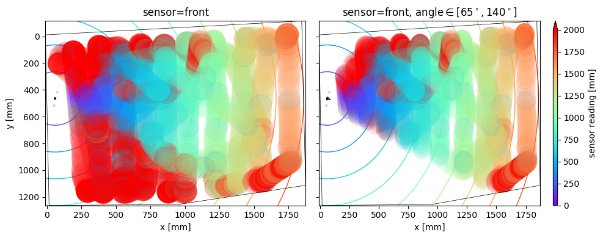
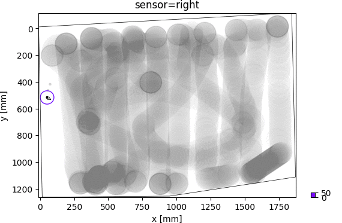

HC-SR04 distance sensor study¶
This is a study of HC-SR04 ultrasonic distance sensors, of the data / readings they provide and their applicability in the sumo robot.
Goals / motivations¶
The purpose of this study of HC-SR04 distance sensors is to understand
- What kind of vision / perception of the robot’s environment the sensors provide?
- How to build the robot’s object detection system based on these sensors?
Questions¶
The questions that the study aims to answer are:
What readings does a sensor produce?
What is a sensor’s field of view (receptive field)?
- How unambiguous the readings are?(What extent of object locations maps to a single reading value?)
- How reliable / consistent the readings are?(What range of readings is produced for a fixed object location / distance?)
Do adjacent sensors interfere with each other?
Key results¶
Answers¶
In summary, the answers to the above questions are:
- What readings does a sensor produce?
Most of the time, sensor readings are the distance to the object in its field of view, as one would expect. The readings are fairly accurate, the correct distance +- TODO mm. This is consistenly so for all object distances and angles in the sensor’s field of view (answer 2.). TODO angle error range
However, at object distance over 1m, TODO% readings become (very) inaccurate. This is likely due to interference between sensors, whose fields of operation overlap, or due to another object affecting the experiment.
See Distance reading vs target angle distribution.See Chart 7.A sensor produces a reading every TODO ms on average, which amounts to TODO readings per 1 s.
- What is a sensor’s field of view (receptive field)?
A sensor detects objects at a range of distances from 0 mm at least up to 1 m and possibly further (answer 1.), and at a range of angles +- TODO deg relative to sensor’s front axis.
See Distance reading vs target angle distribution.See Chart 2.
- How reliable / unambiguous the readings are?
Sensor readings reliably reflect object distance, with +- TODO mm accuracy, if the object is up to 1m away and possibly further, and at an angle [0, +-TODO] deg from the sensor’s front axis. If the object is at an angle +-[TODO, TODO] deg, TODO% readings are unreliable. The readings do not indicate object’s angle, obviously.
In others words, given a reading, the object is at the measured distance +- TODO mm, at an unknown angle between [TODO, TODO], if the object is sure to be within 1 m distance and this angle range. If the object can be at angle TODO, any isolated reading is unreliable.
- How consistent the readings are?
See Chart 4.
- Do adjacent sensors interfere with each other?
Note: Answers related to sensors’s distance and angle range were based on the
data from the right sensor. It was taken as a proxy for a single isolated
sensor, as it overlapped the least with other sensors.
Conclusions¶
Reliable detection of object’s angle in addition to object’s distance is only possible if the angular field of view [1] is limited, thus limiting the uncertainty about the angle.
| [1] | (1, 2) the range of angles at which the sensor can detect the object at all |
Sensors should be placed so that their fields of operation do not overlap, so facing directions diverging by at least TODO deg.
It could be possible to improve reading accuracy, also in areas of low accuracy / sensor overlap, using information from a sequence of readings from all sensors, rather than from isolated readings without context
Study details¶
The remaining part of this document explains the study, how the answers were established.
Experiment¶
Setup¶

Experiment setup. Sensors facing an empty room with a controlled object.
In a controlled experimental session, an array of three distance sensors was placed on the floor, facing an empty room, and operated. A single round metal object was being moved in front of the sensors to a number of different locations, at varying distance from the sensors. Distance readings from sensors were recorded. The session was also recorded in a video, from a camera installed above the floor, facing down. This allowed to recover actual sensor-to-object distances and angles.
Analysis¶
Later offine, distance readings from the sensors were confronted with distance information extracted from the video. Sensor distance readings were related to locations / distance estimates of the metal object, acting as controlled sensor target. A number of charts displaying how the readings relate to the object’s locations were drawn and examined. The charts made apparent the answers to study questions.
Correct sensor distance reading - matches target distance estimate from the video.
Incorrect sensor distance reading - matches target distance estimate from the video.
Sensor miss - reading value close to distance to the wall.
Sensors¶
The three sensors had the following spatial arrangement:
Spatial arrangement of sensors left, front, right. In the image,
labels are next to each sensor’s echo piece.
The sensors were driven by a microcontroller running sensor driver code alone. The code repeatedly fired and read the sensors, each sensor simultaneously and independently. Readings were streamed live to a PC, where they were saved.
Timestamps of echo high and low signals were measured with microsecond precision and collected microseconds after they occured, in an interrupt handler.
Sensor target¶
TODO picture, description
Data analysis¶
In the above experiment, two streams of complementary sensor-related data were recorded:
- Sensor distance readings.
- Video frames with the sensor target’s location.
To relate sensor distance readings (1) to sensor target (the metal object), the target’s locations in video frames (2) were mapped to estimates of:
- Sensor target’s locations in the sensor X-Y plane (the floor).
- Distances and angles from each sensor’s echo piece to sensor target.
Sensor-to-target distance estimates (4), taken as expected distance readings, were compared with actual sensor distance readings (1), producing an estimate of sensor reading error:
- reading error = sensor’s distance reading (1) - expected distance reading (4)
The above measure of error is based on two main assumptions:
- Good accurracy of sensor-to-target distance estimates (4).
- Good calibration of sensor distance readings (1) - that sensors readings indeed indicate the distance, in millimeters.
The relationship between sensor distance readings (1) and quantities (3, 4, 5), were visualized on a number of charts and in a video, each presenting a different view of the total 3 dimensions:
- sensor distance readings [millimeters, 1D]
- sensor target’s location / distance [2D], one of:
- location [(x, y) coordinates in the sensor plane, 2D]
- location [(distance, angle) coordinates in the sensor plane, 2D]
- distance reading error [millimeters, 1D]
Mapping space and time coordinates¶
Pixel coordinates to sensor plane coordinates¶
First, sensor target’s video frame coordinates in pixels of were mapped to the sensors X-Y plane (the floor) coordinates in millimeters, via an affine transformation of 2D vector space.
Once the sensor target’s location in the sensor plane (the floor) was known, distance in millimeters and angle (direction) from each sensor’s echo piece to the sensor target was computed. Specifically, a (distance, angle) vector was computed between two pairs of x-y coordinates in the sensor plane:
- The sensor’s echo piece.
- The closest point in the sensor target’s contour.
The closest point was determined as the closest point on a circle, the approximate shape of the target round metal object’s contour in the sensor plane.
Video time to sensor time¶
TODO
Charts¶
Chart 1: Target location XY vs distance reading¶
These charts show complete source data with minimal processing.
Each spot in the plot corresponds to a single reading of the given sensor.
- The spot’s X-Y coordinates are the sensor plane (the floor) location of the sensor target - of the object that presumably triggered the sensor reading (see known problems though).
- The spot’s color corresponds to sensor reading value, the distance it measured.
- TODO concentric circles
Location of each sensor’s echo piece is marked with a black point.
Chart 2: Target location XY vs distance reading, sliced¶
These charts present the sama data as Chart 1. However, readings are sliced / broken down into 50 mm stripes. A single stripe only shows those target object’s locations for which the reading was in the stripe’s 50 mm reading range - presumably triggered by the target object. Gray locations are target object’s locations for which the reading value was outside the stripe’s range.
Observations:
- Distance readings roughly correspond to actual target’s distance.
- Some readings are visibly incorrect:
leftsensor: in the [1000, …] mm range.frontsensor: in the [450, 500] and [1400, 1600] mm range.rightsensor: in the [1150, 1200] and [1300, 1500] mm range.
- The incorrect readings are possibly due to an external cause, as they are only incorrect in ranges that are narrow, specific and different for each sensor.
- Sensor’s angular field of view [1] is constant, regardless of distance and for all sensors.
Chart 3: Target location XY vs reading error¶
These charts present the sama data as the Chart 1. However, the color indicates reading error, rather than distance. The areas in green are areas of correct readings - where the reading values are very close to the distance to the target object. The areas in red, conversely, are areas of incorrect readings.
Observations:
rightsensor readings, compared toleftandcenter, are correct in a much wider range of sensor-to-target angles, at least twice as wide. This is likely due to larger interference betwen the latter two sensors.- Readings become increasingly incorrect close to the limits of the above angle
range. These is the case for all sensors and seems unaffected by sensor
interference, as it occurs both at outer limits (left of the
leftsensor, right of therightsensor) and at inner limits, that overlap between sensors. - In the range of angles where readings are correct, they are correct at all distances.
rightsensor: readings are incorrect in the far right corner, for an unknown reason.
XY chart notes¶
In the above X-Y charts, the time dimension can be recovered by running the
chart-generating code with the --annotate=... flag.
Reading error color scale¶
Where noted, the color represents distance reading error, that is, the difference between sensor distance reading and expected reading, rather than simply the former. In these cases, red locations are target’s locations for which the sensor’s reading of distance to target is off (too low or too high) by 50 mm or more. Gray locations are misses - target’s locations that triggered an “empty” reading of the stationary wall.
Chart 4: Distance reading vs target distance¶
Chart 5: Distance reading vs cumulative reading error distribution¶

Chart 6: Distance reading vs reading error distribution¶
These charts present the distribution of distance reading error in each distance reading interval. That is, given a reading, how likely the reading is correct and how big the error possibly is.
TODO: How these charts relate to Chart 4.
Observations:
rightsensor: Readings below ca. 1000 mm are correct and accurate, error ≤ 50 mm.left,centersensors: Readings below ca. 1000 mm are also quite correct, but less so, error ∊ [25, 75] mm. This is likely due to larger interference betwen these two sensors.frontsensor: Many readings of ca. 500 mm are wrong. Possibly, another object repeatedly entered the sensor’s field of view during the experiment, at 500 mm distance, while the reference target was at various locations and distances.
Chart 7: Target angle vs reading error distribution¶
These charts present the distribution of distance reading error in each sensor-to-target angle interval. That is, how does the reading error depend on the angle at which the target is located wrt. the sensor.
Observations:
- The range of sensor-to-target angles with correct readings is:
leftandrightsensors : ca. 70 degfrontsensor : ca. 60 deg, more narrow likely due to more interference
rightsensor: In the above angle range, readings are correct, error ≤ 50 mm.rightsensor: Many readings are incorrect in the [60, 70] deg interval. These are likely the readings when the target object was in the far right corner.
Video¶
The video superposes sensor readings on the video recording of the sensor’s target object’s locations
The readings are visualized as:
- concentric arcs radiating from each sensor’s echo piece
- glowing of each echo piece
- sliding bars with reading error
The color of arcs (readings) and sliding bars (errors) indicates reading error.
Arc angle span (width) is set explicitly to a fixed value TODO deg, based on answer 2.
The video was primarily useful for solving problems with the study itself, by inspecting relevant video frames. It allowed eg.
- to identify experimental causes of reading error
- to double-check target object’s location extracted from the video
The video corresponds to video frame ids [TODO-TODO] in the combined source data dump.
Source data¶
The source data underlying the study consisted of two streams of complementary sensor-related data:
- Sensor distance readings - ~9k readings in the overlapping time window [2].
- Video frames with the sensor target’s location - TODO frames in the overlapping time window [2].
| [2] | (1, 2) The overlapping time window, in which both distance readings and video frames were recorded, was 2 min 17 s. |
See Chart 1.
Target object locations¶
The target round metal object’s locations were a dense sample of the sensor X-Y plane’s (the floor) area recorded in the video. Two types of the target object’s moves were recorded:
- Slow parallel sweeps, mostly orthogonal to the sensors.
- Faster random moves, mostly towards / away from the sensors.
Raw data combined¶
TODO: embed DataFrame
Sensor distance readings¶
TODO
Sensor target video recording¶
TODO
Source code¶
Data analysis source code - produced the charts, the video and the combined source data dump.
Known problems and limitations¶
- Artifact distance reading errors, likely due to experimenters’ legs entering the sensor’s field of operation
- Incorrect estimates of sensors target’s location and distance, due to:
- Errors in video object detection
- Incorrect object location, in particular at frame right (far) edge (distance to sensors TODO mm)
- Missed object in TODO frames
- Errors in translation from camera plane to sensor plane, due to:
- Incorrect approximation of 3D space by 2D space, based on an assumption that camera and sensor planes are parallel
- Optical distortions, perspective
- Errors in interpolation of target’s location, from locations at video frames immediately preceding and following a reading
- Errors in mapping video time to sensor time
- Errors in reading times reported by sensor
- Specific shape and material of sensor target: round and metal
Future work¶
- Remove artifact distance reading errors by fixing the experimental procedure
- Fix estimates of sensor targets’ location and distance
- Analyze a single sensor, free of interferences with other sensors
- Analyze multiple sensors, arranged spatially without overlap
- Build and evaluate a complete object detection system from combined sensors
- Confirm that sensor reading frequency is as high as possible or remove the cause of slowdown